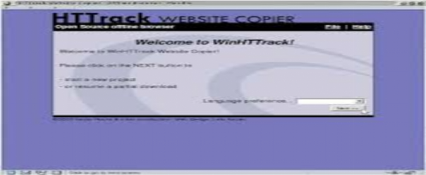
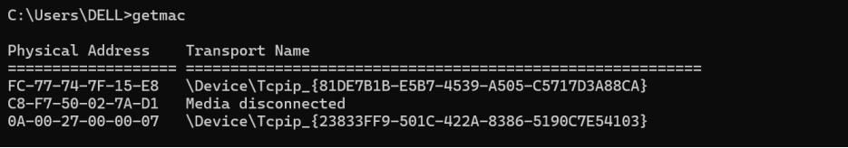
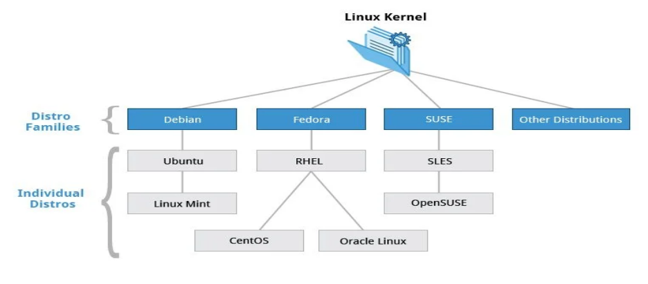
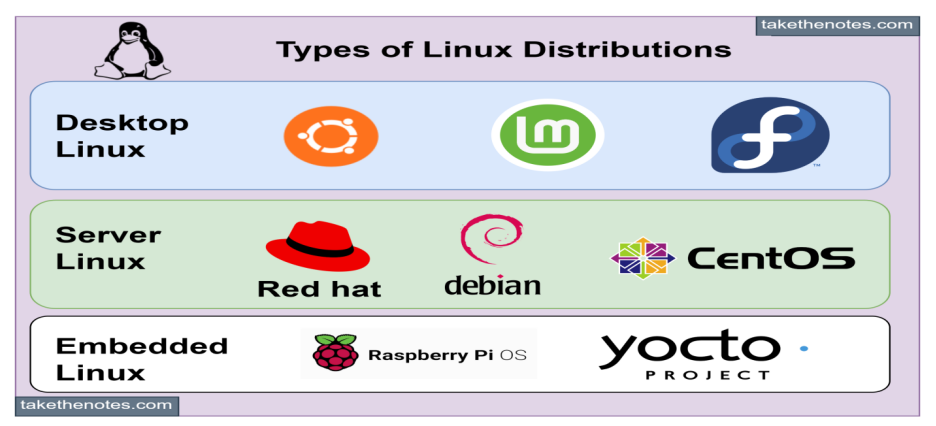

Lesson learnt on Day - 3
1. What is Kali Linux?
o Kali Linux is a specialized Linux-based operating system.
o It is a free and open-source distribution.
o Its primary design purpose is for penetration testing, which involves identifying vulnerabilities in computer systems or networks.
2. What is VirtualBox?
o VirtualBox is a software application that enables users to run multiple operating systems concurrently on a single physical computer.
o It achieves this by creating virtual machines (VMs), which are software-based compute resources.
o Users can install and run various operating systems, such as Windows, Linux, or macOS, within these virtual machines.
3. Are there any tools similar to VirtualBox?
o Yes, several tools offer comparable functionality to VirtualBox for creating and managing virtual machines.
o An example is VMware Workstation Pro, a commercial product known for advanced features.
o VMware Workstation Pro is particularly beneficial for its performance when running multiple virtual machines simultaneously.
4. What is HTTrack?
o HTTrack is a utility designed to download entire websites from the Internet.
o Its main purpose is to allow users to browse and access these websites offline.
o It functions by "mirroring" a website, creating an exact duplicate of its structure and content on a local computer.

5. What is XAMPP control panel and any alternatives of XAMPP controller?
o XAMPP is a software package used for local web development and testing.
o It provides a complete environment to run a web server (Apache), database (MySQL/MariaDB), and other essential components on a local machine.
o Alternatives to XAMPP include MAMP, Laragon, and WampServer, which offer similar functionalities for setting up local development environments.
6. What is MAC Address?
o A MAC (Media Access Control) address is a unique identifier.
o It acts as a hardware ID, assigned by the manufacturer to network interface cards (NICs).
o MAC addresses are crucial for identifying devices on a local network and ensuring that data packets are delivered to their correct destinations.

7. What is Linux and types of Linux and families of Linux?
o Linux is a family of open-source, Unix-like operating systems.
o These operating systems are built upon the Linux kernel, which serves as the core bridge between software and hardware.
o Common types (distributions) of Linux include Ubuntu, Debian, Fedora, Arch Linux, and Red Hat Enterprise Linux, while families include Debian (which Kali Linux is part of), Red Hat, or SUSE.

8. Distribution of Linux?
o Debian-based :
Popular For : User-friendliness, large community support, and wide software availability.
Examples: Ubuntu, Linux Mint, Kali Linux
o Red Hat-based :
Popular For : Enterprise use, stability, and security
Examples : Red Hat Enterprise Linux (RHEL), Fedora, CentOS, Rocky Linux.
o SUSE-based :
Popular For : Strong enterprise features, YaST system management tool.
Examples : OpenSUSE, SUSE Linux Enterprise Server (SLES).

9. What is pfsense?
pfSense is a free and open-source firewall and router software distribution based on FreeBSD. It's widely used for creating secure network environments, offering features like firewalling, routing, VPN, and various network services. pfSense is known for its flexibility and ease of use, allowing users to configure and manage their network settings through a web-based interface